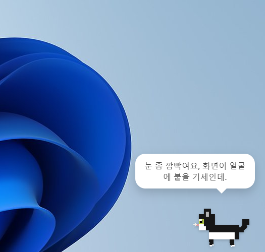
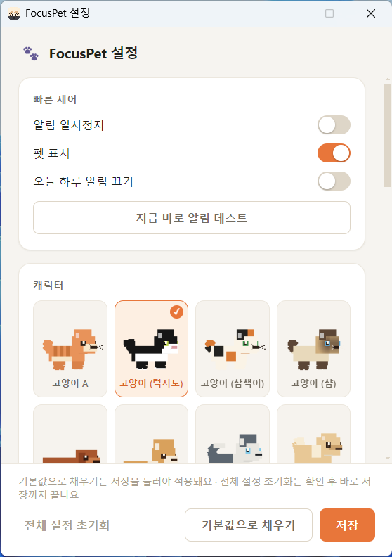

화면 구석에서
조용히 집중하라고
알려주는 펫
작업하거나 공부할 때 화면 한쪽에 앉아있다가, 정해둔 방식으로 "집중하세요"라고 알려주는 데스크탑 펫이에요.
다른 프로그램을 아무리 켜놔도 — 전체화면 강의 영상 위에도 — 항상 떠 있어요. 커서를 졸졸 따라 쳐다보고, 손으로 집어서 원하는 자리에 옮겨둘 수도 있어요.
GitHub Releases에서 최신 버전(.exe / .dmg)을 무료로 받을 수 있어요 · 이전 버전 보기

기능
작은 창 하나에 생각보다 많은 게 들어있어요
CLAUDE.md에 정리된 그대로 — 픽셀아트가 아니라 진짜 3D로 렌더링되는 캐릭터부터, 화면 어디에 있든 사용자를 알아채는 반응형 상호작용까지.
10종 캐릭터
고양이 4종(태비 · 턱시도 · 삼색이 · 샴), 강아지 4종(닥스훈트 · 코기 · 허스키 · 포메라니안), 토끼, 햄스터 중 골라서 데스크탑에 앉혀둘 수 있어요.
진짜 3D 렌더링
각진 복셀(voxel) 스타일로 압출된 3D 모델이 실시간으로 회전하고, 그루밍 · 앉기 · 낮잠 같은 종별 행동을 재생해요. 정지 이미지가 아니에요.
커서를 졸졸 따라다녀요
화면 어디에 마우스가 있든 고개를 돌려 쳐다보고, 가까이 다가가면 귀를 쫑긋 세우는 등 종마다 다른 방식으로 반응해요.
알림 방식은 취향대로
정해진 시간마다 알려주는 고정 간격, 키보드 · 마우스 입력이 끊기면 알려주는 활동 감지 중 상황에 맞는 쪽을 골라 설정할 수 있어요.
언제나 맨 위에
전체화면으로 강의 영상을 틀어놔도, 다른 어떤 프로그램을 켜놔도 항상 화면 위에 떠 있어서 절대 안 가려져요.
손으로 집어 옮기기
드래그로 원하는 자리에 옮길 수 있고, 화면 가장자리 가까이 놓으면 자석처럼 딱 붙어요. 놓으면 작업표시줄 위로 사뿐히 내려앉아요.

커스터마이징
세세한 것까지 내 맘대로
설정 창 하나에서 캐릭터부터 알림 방식, 소리, 시작 프로그램 등록까지 전부 조절할 수 있어요.
- 캐릭터 10종 중 원하는 아이로 언제든 교체
- 고정 간격 · 활동 감지 중 알림 방식과 간격을 직접 설정
- 알림 소리 켜고 끄기 + 볼륨 조절, 메시지도 직접 작성
- 가만히 있기 · 좌우로 걸어다니기 중 이동 방식 선택
- Windows 시작 시 자동 실행, 오늘 하루만 알림 끄기, 10분 뒤 다시 스누즈
캐릭터 로스터
10종 중 마음에 드는 아이로
설정 창에서 언제든 바꿀 수 있어요. 각 캐릭터는 실제 품종 특징(코기의 짧은 다리와 없는 꼬리, 허스키의 파란 눈 등)을 반영해서 디자인했어요.
고양이
강아지
기타
다운로드
지금 바로 시작하기
GitHub Releases에서 무료로 받을 수 있어요. 별도 가입이나 결제 없이, 원하는 OS의 설치 파일을 받아 실행하면 끝이에요.
Windows
설치 파일을 실행하면 "Windows가 PC를 보호했습니다"라는 SmartScreen 경고가 뜰 수 있어요 — 서명 인증서 없이 배포되는 앱이라 나오는 정상적인 경고예요. 추가 정보를 클릭한 뒤 실행 버튼을 누르면 정상적으로 설치돼요.
Mac
애플 개발자 서명 없이 빌드돼서, 다운로드 후 처음 열 때 "손상되었기 때문에 열 수 없습니다"라는 경고가 뜰 수 있어요. 터미널에서 아래 명령을 한 번 실행하면 해결돼요:
xattr -cr /Applications/FocusPet.app